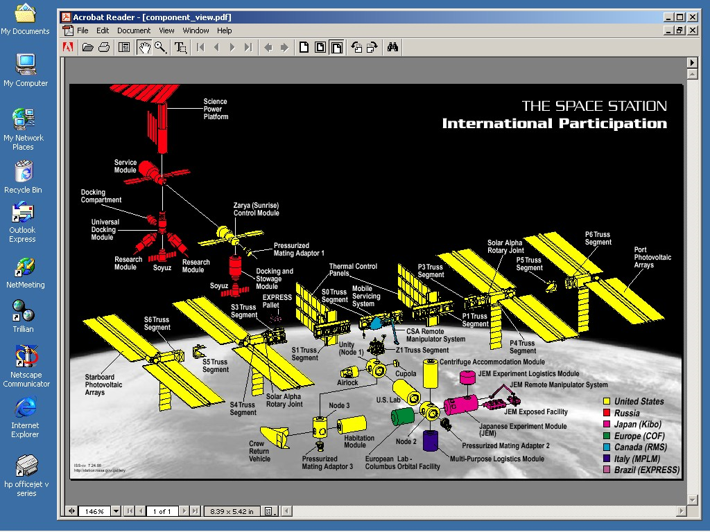

Most operating systems implement the concept of a file, or document. A file is a collection of data stored under a unique name. Files may be grouped together into directories, or folders. A directory is a collection of related files and subdirectories. The file system is the basic tool for organizing the programs and data stored in a computer. It allows people to place related pieces of information “near” one another.
An example directory structure is outlined in . Files are indicated by “document” icons, and directories by “file folder” icons. The data is organized into a single main directory “letters”. Letters is subdivided into two subdirectories: “personal” letters and “business” letters. Personal letters includes letters to “Mom” and to “Pat,” your significant other, plus one letter to your Cousin It. Note that “CousinIt” is a file, or document, containing a single letter, while “Pat” is a directory containing multiple letters. If you were planning to write more than one letter to Cousin It, you would probably make a separate directory to hold these letters, as was done for Mom.

Overview of a file system
It is important to understand that while a file system is a tool for organizing data, it does not do the organizing for you. A human must decide which directories to create, what to name them, and what files and subdirectories belong in them. In a well-organized file system, the directories will contain files and subdirectories that are logically related to one another. Properly used, a file system can make it much easier to find and retrieve important data; improperly used, it can make the task very difficult.
The user interface is another major characteristic of operating systems. From the view of the human user, the operating system’s user interface defines the basic behavior of the computer. Most modern operating systems, such as Apple’s OS X, Microsoft’s Windows XP, and Linux include a graphical user interface, or GUI (pronounced “gooey”). A GUI uses small graphical images, called icons, to represent programs, data files, directories, and other resources. In Microsoft Windows, double-clicking the mouse pointer on the icon for a directory or disk drive opens a window that will display the contents of that directory or drive. From this window, the user can double-click on a subdirectory icon to open it. GUI’s make it relatively easy to navigate any reasonably well-organized file system simply by “clicking” your way through it.
Once a particular file has been located, we generally want to view, and perhaps modify, its contents. In order for the contents of a file to be displayed in a meaningful manner, the file must be accessed by an appropriate application. Modern operating systems associate files of a particular type with application programs capable of displaying and manipulating data of that type. Double-clicking on a file’s icon causes an appropriate program to be launched and the file’s data to be loaded into that program.
For example, if a file contains an image in JPEG format, then that file must be opened by a program capable of viewing JPEG images. A file containing a text-based document, such as a memo or report, must be opened by a different kind of program, a word processor. Associating particular application programs with the file types they recognize, enables the operating system to launch an appropriate program when a file’s icon is double-clicked. shows what my computer’s desktop looks like after double-clicking the icon for “component_view.pdf” which is a Portable Document Format file associated with Adobe’s Acrobat Reader program. Windows launches Acrobat Reader and then automatically loads the data file “component_view.pdf”.
A PDF file viewed with Adobe’s Acrobat Reader
In addition to navigating the file system and launching applications, the operating system also supports a number of file system “maintenance” operations. The end-user accessible file system operations include:
-
Deleting a file
-
Creating a copy of an existing file
-
Moving a file to a new location
-
Creating a new directory
-
Removing an existing directory
Note that creating a new file is not included in this list – even though that operation is supported by the operating system. The reason for omitting file creation from the list of end-user accessible file system operations is that file creation is performed by programs – not end-users directly interacting with the operating system. (If this distinction doesn’t make any sense to you, think about it this way, you create files on your PC by using the “Save” option of an application – not by some drag-and-drop desktop command or system menu.)
In most modern operating systems each of the end-user accessible operations can be performed in two ways: either graphically by selecting options with the mouse and dragging icons from one screen location to another, or via typed command. Communication with older operating systems, such as DOS and early versions of Unix, was limited to typed commands. This style of interface, called a “command line interface,” is no longer popular, since typing is slower than pointing and it is often difficult to remember the names and exact form of all of the commands understood by the operating system.
In the Microsoft Windows family of operating systems, a file can be deleted by dragging its icon over to the “Recycle Bin” icon and dropping it there. A directory can be deleted in the same way – by dropping its icon over the “Recycle Bin”. Occasionally the recycle bin needs to be emptied by right-clicking the mouse over it and selecting “Empty Recycle Bin”.
Files are moved from one directory to another in Windows by dragging the file’s icon from one directory’s window to the window associated with another directory. Copying a file works similarly, only in this case the control key, “ctrl”, should be held down on the keyboard while the icon is dragged from one window to another. Copying can also be performed by right-clicking the file’s icon, selecting “Copy” from the popup menu, then selecting “Paste” from the “Edit” menu of the target directory’s window.
Creating a new directory is accomplished by selecting “New” and then “Folder” under the “File” menu of the window associated with the directory where this new directory is to be located. When created, the new directory will be named “New Folder”, but can be changed by simply typing the desired name and hitting the enter key.
Each of these operations can also be performed by entering one of the following text-based commands.
-
Deleting a file
del filename -
Creating a copy of an existing file
copy from_filename to_filename -
Moving a file to a new location
move from_filename to_filename -
Creating a new directory
mkdir directoryname -
Removing an existing directory
rmdir directoryname
These kinds of file system commands are supported by every general-purpose operating system – be it Apple’s OS X, Linux, Free BSD, Windows, or DOS. What varies from operating system to operating system is the exact form of these commands and the details of how one interacts with the graphical user interface to issue the commands – assuming a graphical user interface is supported, DOS for example has no GUI.
The popularity of particular operating systems rise and fall over time. In days gone by, DOS, Mac OS, and Window 3.1 ruled the PC market. Today, DOS is pretty much a dead OS. The current Windows family of operating systems (i.e., Windows XP, Windows 7, and Windows 8) bears little resemblance to Windows 3.1. While Apple’s OS X interface is a clear descendent of the original Mac OS, it too incorporates substantial changes. Given this history, it would be surprising if a decade from now operating systems haven’t changed substantially from their current form.
Although it is certainly important for you to understand how to interact with the particular operating system currently run by your computer, it is equally important that you understand the kinds of operations supported by all existing operating systems – especially since these operations are likely to be supported by future operating systems for years to come. While the details of how these operations are performed do and will vary from system to system, knowing what to expect will accelerate the learning process.